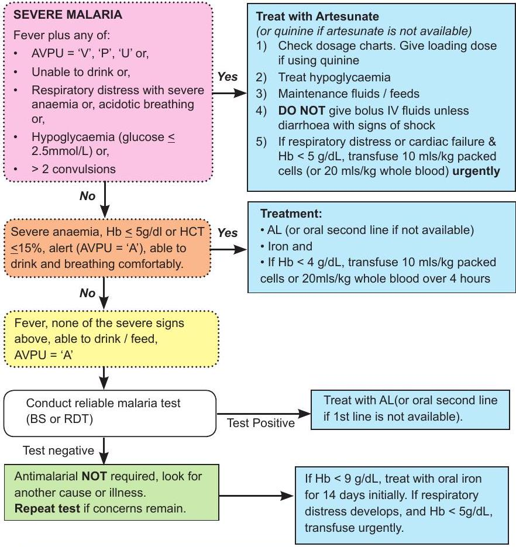
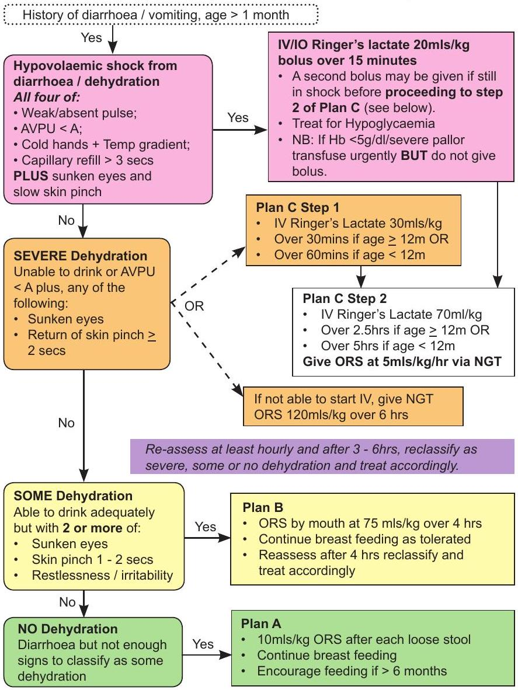

Management of Common Illnesses (Part 1)
Malaria
If a high quality blood slide is negative with signs of SEVERE malaria, start treatment BUT REPEAT 24 hourly up to 3 times and STOP treatment if 3rd test is negative.
Treatment failure:
- Consider other causes of illness / co-morbidity.
- A child on oral antimalarials who develops signs of severe malaria (Unable to sit or drink, AVPU=V,U or P and / or respiratory distress) at any stage should be changed to IV artesunate (or quinine if not available).
- If a child on oral antimalarials has fever and a positive blood slide after 3 days ( 72 hours) then check compliance with therapy and if treatment failure proceed to second line treatment.
Malaria treatment doses
For drug preparation refer to the next section.
- Artesunate is given IV / IM for a minimum of 24 hours.
- After the third injection of artesunate and the child can eat/drink then change to a full course of artemisinin combination therapy (ACT) 8-12 hours after the last dose of artesunate (typically the 1st line oral anti-malarial, Artemether Lumefantrine).
| Weight (kg) | Artesunate, $3 \mathrm{mg} / \mathrm{kg}$ At 0, 12 and 24 h then daily for max 7 days | Quinine, loading $20 \mathrm{mg} / \mathrm{kg}$ then $10 \mathrm{mg} / \mathrm{kg}$ | Quinine ($10 \mathrm{mg} / \mathrm{kg}$) 200 mg tabs Quinine sulphate** 8 hourly |
|||
|---|---|---|---|---|---|---|
| IV mls of 60 mg in 6 mls | Dose in mg | IM mls of 60 mg in 3 mls | Loading | 8 hrly | ||
| 3.0 | 0.9 | 9 | 0.45 | 60 | 30 | 1/4 |
| 4.0 | 1.2 | 12 | 0.6 | 80 | 40 | 1/4 |
| 5.0 | 1.5 | 15 | 0.8 | 100 | 50 | 1/4 |
| 6.0 | 1.8 | 18 | 0.9 | 120 | 60 | 1/2 |
| 7.0 | 2.1 | 21 | 1.1 | 140 | 70 | 1/2 |
| 8.0 | 2.4 | 24 | 1.2 | 160 | 80 | 1/2 |
| 9.0 | 2.7 | 27 | 1.4 | 180 | 90 | 1/2 |
| 10.0 | 3 | 30 | 1.5 | 200 | 100 | 3/4 |
| 11.0 | 3.3 | 33 | 1.6 | 220 | 110 | 3/4 |
| 12.0 | 3.6 | 36 | 1.8 | 240 | 120 | 3/4 |
| 13.0 | 3.9 | 39 | 1.95 | 260 | 130 | 3/4 |
| 14.0 | 4.2 | 42 | 2.1 | 280 | 140 | 3/4 |
| 15.0 | 4.5 | 45 | 2.3 | 300 | 150 | 1 |
| 16.0 | 4.8 | 48 | 2.4 | 320 | 160 | 1 |
| 17.0 | 5.1 | 51 | 2.6 | 340 | 170 | 1 |
| 18.0 | 5.4 | 54 | 2.7 | 360 | 180 | 1 |
| 19.0 | 5.7 | 57 | 2.9 | 380 | 190 | 1 1/4 |
| 20.0 | 6.0 | 60 | 3 | 400 | 200 | 1 1/4 |
| Weight | Age | Dose |
|---|---|---|
| <5 kg | - | 1/2 tablet |
| 5-14 kg | 3-35 mo | 1 tablet |
| 15-24 kg | 3-7 yrs | 2 tablets |
| 25-34 kg | 9-11 yrs | 3 tablets |
| Age | Dose |
|---|---|
| 3-35 mo | 1 paed tab |
| 3-5 yrs | 2 paed tabs |
| 6-11 yrs | 1 adult tab |
Anti-malarial drug doses
(please check the IV or tablet preparation you are using, they may vary**)
Artesunate
Artesunate typically comes as a powder together with a 1 ml vial of $5 \%$ bicarbonate that then needs to be further diluted with either normal saline or 5% dextrose - the amount to use depends on whether the drug is to be given iv or im (see table below)
- DO NOT use water for injection to prepare artesunate for injection
- DO NOT give artesunate if the solution in the syringe is cloudy
- DO NOT give artesunate as a slow iv drip (infusion)
- YOU MUST use artesunate within 1 hour after it is prepared for injection
| IV | IM | |
|---|---|---|
| Artesunate powder (mg) | 60 mg | 60 mg |
| Sodium Bicarbonate (mls,5%) | 1 ml | 1 ml |
| Normal Saline or $5 \%$ Dextrose (mls) | 5 mls | 2 mls |
| Artesunate concentration (mg/ml) | $10 \mathrm{mg} / \mathrm{ml}$ | $20 \mathrm{mg} / \mathrm{ml}$ |
Quinine
For IV infusion typically 5% or 10% dextrose is used.
- Use at least 1 ml fluid for each 1 mg of quinine to be given
- DO NOT infuse quinine at a rate of more than $5 \mathrm{mg} / \mathrm{kg} / \mathrm{hour}$
- Use $5 \%$ Dextrose or normal saline for infusion with 1 ml of fluid for each 1 mg of quinine.
- The $20 \mathrm{mg} / \mathrm{kg}$ loading dose therefore takes 4 hours or longer
- The $10 \mathrm{mg} / \mathrm{kg}$ maintenance dose therefore takes 2 hours or longer
For IM Quinine:
- Take 1 ml of the 2 mls in a 600 mg Quinine sulphate IV vial and add 5 mls water for injection - this makes a $50 \mathrm{mg} / \mathrm{ml}$ solution.
- For a loading dose this will mean giving $0.4 \mathrm{mls} / \mathrm{kg}$
- For the maintenance dosing this will mean giving $0.2 \mathrm{mls} / \mathrm{kg}$
- If you need to give more than 3 mls (a child over 8 kg for a loading dose or over 15 kg for maintenance doses then give the dose into two im sites - do not give more than 3mls per injection site.
- ** For oral Quinine 200 mg Quinine Sulphate $=200 \mathrm{mg}$ Quinine Hydrochloride or Dihydrochloride but $=300 \mathrm{mg}$ Quinine Bisulphate. The table of doses is ONLY correct for a 200 mg Quinine Sulphate tablet.
Meningitis
Diarrhoea / Gastroenteritis
Age $\geq 1$ month (excluding severe malnutrition)
All cases to receive Zinc. Antimicrobials are NOT indicated unless there is dysentery or proven amoebiasis or giardiasis.
Dehydration Management
(Child WITHOUT severe malnutrition/severe anaemia*)
| Weight (kg) | Shock, 20mls/kg Ringer's Immediately | Plan C | Plan B - $75 \mathrm{mls} / \mathrm{kg}$ Oral / ORS Over 4 hours |
|||
|---|---|---|---|---|---|---|
| Step 1: $30 \mathrm{mls} / \mathrm{kg}$ Ringer's Age <12m, 1 hour Age $\geq$ 1yr, 1/2 hour |
Step 2: 70mls/kg Ringer's | |||||
| Age <12m, over 5 hrs = drops/min** | Volume | Age $\geq$ 1yr, over $21 / 2 \mathrm{hrs}$ = drops/ $\mathrm{min}^{* *}$ | ||||
| 2.00 | 40 | 50 | 10 | 150 | **Assumes 'adult' IV giving sets where 20 drops $=1 \mathrm{ml}$ | 150 |
| 2.50 | 50 | 75 | 13 | 200 | 150 | |
| 3.00 | 60 | 100 | 13 | 200 | 200 | |
| 4.00 | 80 | 100 | 20 | 300 | 300 | |
| 5.00 | 100 | 150 | 27 | 400 | 55 | 350 |
| 6.00 | 120 | 150 | 27 | 400 | 55 | 450 |
| 7.00 | 140 | 200 | 33 | 500 | 66 | 500 |
| 8.00 | 160 | 250 | 33 | 500 | 66 | 600 |
| 9.00 | 180 | 250 | 40 | 600 | 80 | 650 |
| 10.00 | 200 | 300 | 50 | 700 | 100 | 750 |
| 11.00 | 220 | 300 | 55 | 800 | 110 | 800 |
| 12.00 | 240 | 350 | 55 | 800 | 110 | 900 |
| 13.00 | 260 | 400 | 60 | 900 | 120 | 950 |
| 14.00 | 280 | 400 | 66 | 1000 | 135 | 1000 |
| 15.00 | 300 | 450 | 66 | 1000 | 135 | 1100 |
| 16.00 | 320 | 500 | 75 | 1100 | 150 | 1200 |
| 17.00 | 340 | 500 | 80 | 1200 | 160 | 1300 |
| 18.00 | 360 | 550 | 80 | 1200 | 160 | 1300 |
| 19.00 | 380 | 550 | 90 | 1300 | 180 | 1400 |
| 20.00 | 400 | 600 | 95 | 1400 | 190 | 1500 |
*Consider immediate blood transfusion if severe pallor or $\mathrm{Hb}<5 \mathrm{~g} / \mathrm{dl}$ on admission